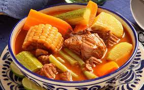

Este mole de olla no puede faltar en tu recetario. Aprende a hacer la
receta de la abuela de manera fácil, rápida y sobre todo, deliciosa.

An elephant at sunset
Ingredientes:
PARA 4 PERSONAS
- 1/2 kg Chambarete, en trozos
- 1/2 kg Retazo de res, en trozos
- 2 Huesos de tuétano
- 1/2 Cebolla
- 1/2 cabeza de ajos
- 2 Elotes, cortados en cuartos
- 2 xoconostles , sin piel y sin semillas y cortados en sextos
- 1 Chayote, pelado y en cubos medianos
- 200 gr Elotes, en tercios
- 1 Papa grande, en cubos medianos
- 1 Calabaza grande, en medias lunas
- 2 zanahorias, en medias lunas
PARA LA SALSA
- 1/4 Cebolla
- 2 dientes Ajos
- 2 Chiles ancho, desvenados y sin semillas
- 1 Chile pasilla, desvenado y sin semillas
- 2 Chiles guajillo, desvenados y sin semillas
- 3 jitomates, en mitades
- 3 cucharadas de aceite
- 2 ramas de Epazote
PARA LOS CHOCHOYOTES
- 200 gr Masa de maíz
- 1 cucharadita de aceite
- 1 cucharada de Epazote finamente picado
- Sal al gusto
Procedimiento:
- COLOCA la carne, la cebolla y cubre con agua. Añade
sal y cocina por 30 minutos en una olla de presión a partir de que
suelte vapor.
- RETIRA la cebolla y los ajos. Añade los elotes y el
xoconostle. Cocina por 20 minutos.
PARA LA SALSA
- CALIENTA aceite en una cacerola y acitrona la cebolla y el ajo.
- AÑADE los chiles y cocina sin dejar de mover hasta que se doren.
Agrega el jitomate y cocina por 10 minutos.
- VIERTE un poco de agua y sal. Tapa y cocina por 10 minutos, deja enfriar.
- LICÚA y cuela. Sofríe en una cacerola y reserva.
PARA LOS CHOCHOYOTES
- MEZCLA la masa de maíz con el aceite, epazote y sal. Mezcla y forma bolitas de 2 centímetros.
- HAZ un hueco con la yema de tu dedo, como si fuera una cazuelita. Reserva.
- VIERTE la salsa al caldo y mezcla. Agrega las ramas de epazote y sazona de nuevo.
- AÑADE los chayotes y las papas. Cocina por 8 minutos. Agrega los ejotes y zanahorias.
- TAPA y cocina por 10 minutos más. Agrega los chochoyotes y cocina por 10 minutos o hasta que todo esté cocido.